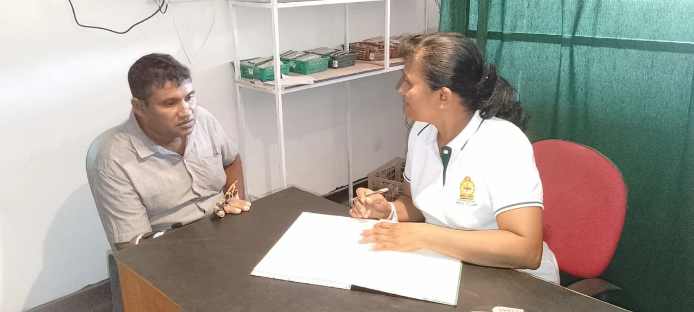

ජීවායු වෙද මැදුර
දිවියට සුවයක් | A cure for life
16 mile post, Thalawa Road, Eppawala.
Tel: 070 252 0676

දිවියට සුවයක් | A cure for life
16 mile post, Thalawa Road, Eppawala.
Tel: 070 252 0676
“ වසර ගණනාවක පාරම්පරික අත්දැකීම් සහ විශ්වාසය පෙරදැරි කර, ආයුර්වේදයේ නවීන දැනුම උපයෝගී කර ගනිමින් ජීවායු වෙද මැදුර, හුදෙක් රෝගයකට ප්රතිකාර කිරීමට එහා ගිය, මානුෂීය මෙන්ම සුහදශීලිත්වය කැටි කර ගත් විශේෂ ක්රමවේද සමගින් ඔබේ දිවියට සුවයක් (A Cure for Life) ගෙන දෙන පින්බිමකි. ”
පාරම්පරික හෙළ වෙදකමේ අසිරියත්, සොබාදහමේ සුවකිරීමේ බලයත් ආයුර්වේදයේ නවීන ක්රමවේදත් උපයෝගී කරගනිමින්, නිරෝගී සහ සතුටින් පිරි පරපුරක් බිහිකිරීමේ ඒප්පාවල ප්රදේශයේ ප්රමුඛතම ආයුර්වේද සුව සෙවණ වීම අපගේ අරමුණයි.
"Our vision is to become the leading Ayurvedic healing center in the Eppawala region, dedicated to fostering a healthy and happy generation by integrating the wonders of traditional Hela medicine, the natural healing power of nature, and modern Ayurvedic methodologies.".
පරම්පරාගතව පැවත එන දේශීය වෛද්ය රහස් සහ පිරිසිදු ආයුර්වේද ප්රතිකාර ක්රමවේදයන් මගින්, රෝගීන්ගේ කායික හා මානසික සුවතාවය ඉහළ නැංවීමත්, උසස් ප්රමිතියෙන් යුතු වෛද්ය සේවාවක් සපයමින් ගුණාත්මක ඔ!ෂධ භාවිතයෙන් සුවබර ජීවිතයක් උරුම කර දීම අපගේ මෙහෙවරයි.
"Our mission is to enhance the physical and mental well-being of our patients through ancestral indigenous medical secrets and pure Ayurvedic treatments, while ensuring a healthy life by providing high-quality medical services and premium herbal medicines.".

වෛද්ය පී. සොමරත්න (Dr. P. Somarathna)
තම පරම්පරාවේ පුස්කොලපොත් සහ තම පරපුරේ වෙද සෘෂිවරැන්ගෙන් ලබාගත් දැනුමින් සර්වාංග රෝග පිළිබඳ පුහුණුව ලත් පාරම්පරික වෛද්යවරයෙකි. වසර 15 කට වැඩි අත්දැකීම් සහිත, භූත විද්යාව පිළිබඳ හසල දැනුමක් ඇති ඉසිවරයෙකි.
He is a traditional physician trained in all kinds of diseases, with the knowledge he has acquired from the books of his generation and the medical sages of his generation. He is a healer with over 15 years of experience and a profound knowledge of demonology.

වෛද්ය එච්.එම්. මංගලිකා හේරත් (Dr. Mangalika Herath)
**සර්වාංග රෝග පිළිබඳ පුහුණුව** සහ **ආයුර්වේද හා කේරල පංචකර්ම** පිළිබඳ සුවිශේෂී දැනුමක් සහිත පළපුරුදු දේශීය වෛද්යවරියකි. දේශීය හා විදේශීය පුහුණුව ලැබූ එතුමිය, සාම්ප්රදායික ආයුර්වේද ක්රමවේදයන් යොදා ගනිමින් සාර්ථක ප්රතිකාර ලබා දීම පිළිබඳව ප්රසිද්ධය. වසර කිහිපයක්ම උතුරැමැද පළාතේ හොදම පරිසර නිළධාරිණිය ලෙසින් සම්මානයට පාත්ර වූ පරිසර වේදිනියෙකි .
"She is an experienced indigenous physician with specialized training in general medicine (Sarvanga Roga) and exceptional knowledge of Ayurveda and Kerala Panchakarma. Having received both local and international training, she is well-known for providing successful treatments using traditional Ayurvedic methodologies. Furthermore, she is an environmentalist who has been honored as the best environmental officer in the North Central Province for several consecutive years."
වෛද්ය ශිෂ්ය එච්.එම්. ගාමිණී තිලකරත්න (H.M. Gamini Thilakarathna)
ඉහත වෛද්යවරැන්ගෙන් නිසි දැනුම ලබා ගනිමින් කුරැණෑගල ආයුර්වේද වෛද්ය විද්යලයේ පුහුණුව ලබන වෛද්ය ශිෂ්යකෙි. SMC APTI Ayurveda Panchakarma & Spa Therapy පාඨමාලාව හදාරා ඒ් දැනුම උපයෝගී කර ගනිමින් ආයුර්වේද සහ කේරල පංචකර්ම ප්රතිකාර ක්රම යොදාගනිමින් රෝගීන් සුවපත් කිරීමේ යෙදී සිටී.. ආයුර්වේද ඖෂධ නිෂ්පාදනාගාර කිහිපයක රැකියාව කිරීම තුලින් අවුෂධ වර්ග සහ ඖෂධ නිෂ්පාදනය පිළිබද විශේෂ දැනුමක් ලබා ඇත. සංධ් වේදනා සුව කිරීම සම්බන්ධයෙන් නිකවැරටිය ප්රදේශයේ විශේෂ ප්රසිද්ධියක් ලබා ඇත.
"he is a medical student currently undergoing training at the Kurunegala Ayurvedic Medical College, gaining profound knowledge under the guidance of the aforementioned physicians. he have successfully completed the SMC APTI Ayurveda Panchakarma & Spa Therapy course. Furthermore, through his professional experience at several Ayurvedic pharmaceutical manufacturing plants, he have acquired specialized knowledge in medicinal herbs and the production of Ayurvedic medicines."